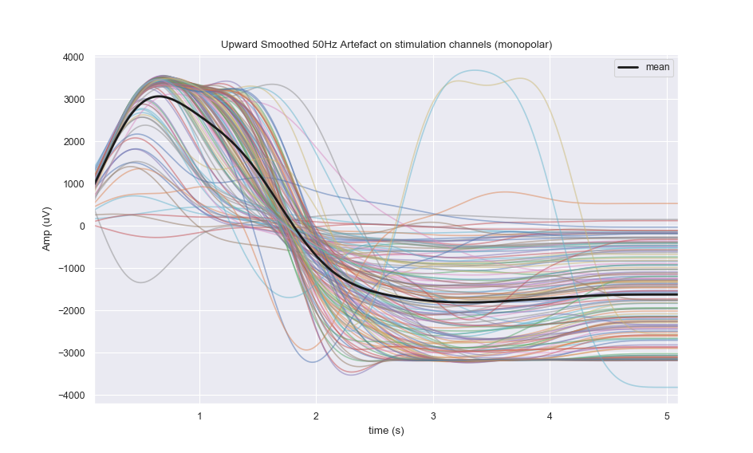

Legend
Plot legend for a specific entry :
f, ax = plt.subplots()
ax.plot(t, eeg_traces_2d)
mean_h, = ax.plot(t, np.mean(eeg_traces_2d, axis=0), label='mean')
ax.legend(handles=[mean_h])

Interactive Backend
To have an interactive figure, one way is to set the backend to 'TkAgg' with :
import matplotlib
matplotlib.use('TkAgg')